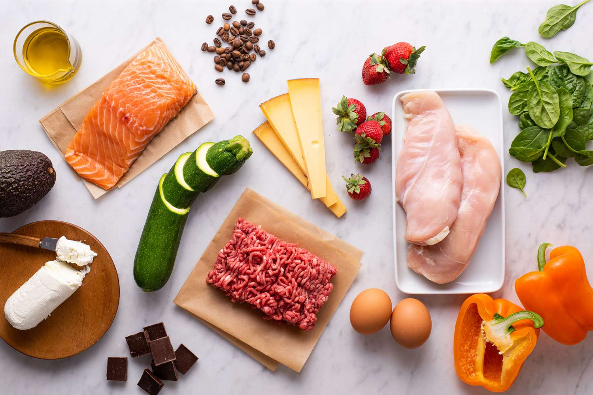

Satisfy Healthy
Home
Explore
Food
Fitness
Forum
Contact Us
Explore
Tại đây bạn sẽ tìm được những bài viết, nghiên cứu đồ ăn
Bao gồm những chia sẻ, kinh nghiệm và câu chuyện về dinh dưỡng

Keto: Cơ sở khoa học, lợi ích và tác hại?
Blog
2 minutes
Đường: lợi ích và tác hại với cơ thể, bao nhiêu là đủ?
Blog
2 minutes
Có một Hà Nội thật đẹp về đêm
Blog
2 minutes
Những gành hàng gánh cả Hà Nội theo sau
Blog
2 minutes
>